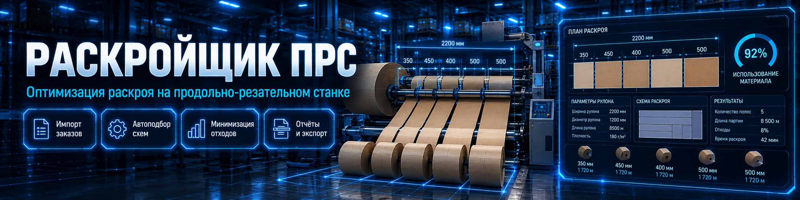
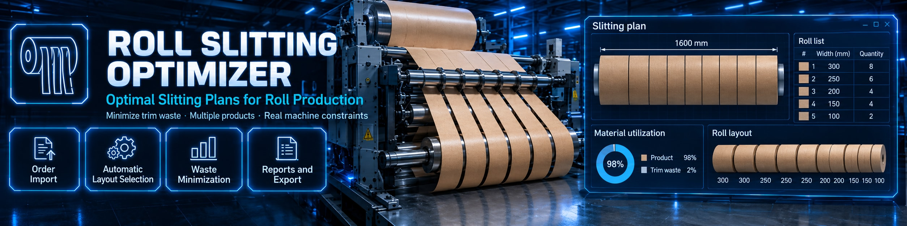

Заказы из таблицы
Orders from a spreadsheet
Ввод вручную, импорт XLSX, UTF-8 CSV/TSV и вставка из буфера. Сопоставьте столбцы при загрузке.
Enter orders manually, import XLSX or UTF-8 CSV/TSV, or paste a table. Map columns during import.


ПРОДОЛЬНЫЙ РАСКРОЙ · ПРОИЗВОДСТВЕННЫЙ ПЛАН
ROLL SLITTING · PRODUCTION PLANNING
От списка заказов — к плану работы продольно-резательного станка. Подберите сочетания полос, оцените обрезь и загрузку оборудования, передайте понятные схемы в производство.
Turn an order list into a slitter production plan. Select strip combinations, review trim waste and machine time, and share clear cutting layouts with production.
Ввод вручную, импорт XLSX, UTF-8 CSV/TSV и вставка из буфера. Сопоставьте столбцы при загрузке.
Enter orders manually, import XLSX or UTF-8 CSV/TSV, or paste a table. Map columns during import.
Ширина сырья, число и толщина ножей, скорость станка и время перенастройки участвуют в расчёте.
The calculation accounts for raw width, knife count and thickness, machine speed and setup time.
Марка и толщина задаются в каждом заказе. Несовместимые материалы рассчитываются раздельно.
Set material grade and thickness per order. Incompatible materials are processed separately.
Порядок операций, время начала и окончания, выполнение заказов и опоздания — в таблицах результатов.
Review operation sequence, start and finish times, fulfilled orders and lateness in the result tables.
Выберите строку плана, чтобы увидеть полосы, обрезь и суммарный припуск ножей. Схему можно скопировать.
Select a plan row to see strips, trim and total knife allowance. Copy the diagram to the clipboard.
Сохраняйте проекты PRS JSON, экспортируйте план в XLSX/CSV и производственный отчёт в PDF/HTML.
Save PRS JSON projects, export the plan to XLSX/CSV and production reports to PDF/HTML.
Формат, количество, марка, толщина и срок исполнения.
Width, quantity, grade, thickness and due date.
Ширина сырья, ножи, скорость, переналадка и дата старта.
Raw width, knives, speed, setup time and production start date.
Длина, обрезь или опоздание — в зависимости от задачи.
Prioritize run length, trim waste or lateness.
Посмотрите выполнение заказов и сохраните план со схемами.
Review order fulfilment and save the plan with its layouts.
Реальный расчёт учебного задания: три заказа на сырье шириной 1200 мм. Нажмите на изображение для увеличения.
An actual calculation of a sample job: three orders on a 1200 mm web. Select an image to enlarge it.
Исходные заказы, параметры станка, последовательность операций и схема выбранного раскроя.
HTML-отчёт программы: сводка, таблица операций и графические схемы.
Orders, machine settings, operation sequence and the selected cutting pattern.
English HTML translation of the report from the same sample job.
Английский пример — перевод HTML-отчёта для сайта. Фиксированные подписи штатного PDF/HTML-экспорта программы пока на русском языке.
The English sample is an HTML report translated for this website. Fixed labels in the application’s PDF/HTML exports are currently in Russian.
Интерфейс, схемы и встроенное руководство доступны на десяти языках. Переключение языка не удаляет заказы и не требует повторного расчёта.
The interface, diagrams and built-in user guide are available in ten languages. Switch languages without losing orders or recalculating.
Выберите срок использования программы. Цены для России — в рублях, международные — в евро.
Choose your license term. Russian pricing is in rubles; international pricing is in euros.
Без ограничения срока
No expiry
Как купить →How to buy →На 12 месяцев
For 12 months
Как купить →How to buy →На 1 месяц
For 1 month
Как купить →How to buy →Лицензия подготавливается для конкретного компьютера. Согласуйте с автором срок лицензии и способ оплаты.
A license is prepared for a specific computer. Contact the author to agree on the license term and payment method.
Бессрочная, годовая или месячная — по вашему плану использования.
Choose a perpetual, annual or monthly license.
Используйте программу определения кода оборудования на компьютере, для которого нужна лицензия. Скачать определитель кода ↗.
Run the hardware code detector on the computer to be licensed. Download the hardware code detector ↗.
Укажите «Раскройщик ПРС», срок лицензии, код оборудования и реквизиты для счёта.
Include “PRS Cutter”, the license term, hardware code and billing details.
Автор подтвердит условия и сообщит реквизиты для оплаты.
The author will confirm the terms and provide payment details.
Отправьте автору дату и подтверждение платежа.
Send the payment date and confirmation to the author.
После проверки оплаты автор пришлёт персональный дистрибутив для указанного компьютера.
After verifying payment, the author will send a personalized distribution for your computer.
vguberniev@gmail.com
Нет. XLSX читается и записывается напрямую. Старые файлы XLS перед импортом сохраните в XLSX.
No. XLSX files are read and written directly. Convert legacy XLS files to XLSX before importing.
Максимальная длина, минимальная обрезь и минимальное опоздание. Это последовательный подбор операций по алгоритму ПОЯС; глобальный оптимум расписания не заявляется.
Maximum length, minimum trim and minimum lateness. Operations are selected sequentially using the POYAS algorithm; a globally optimal schedule is not claimed.
Статус, остатки и выполнение каждого заказа. Если все заказы выполнить невозможно, программа показывает неполный результат.
Check the status, remaining quantities and fulfilment of every order. The application indicates when the plan is incomplete.
Для расчёта, импорта XLSX, экспорта PDF и чтения встроенного руководства интернет не требуется.
Calculations, XLSX import, PDF export and the built-in user guide do not require an internet connection.